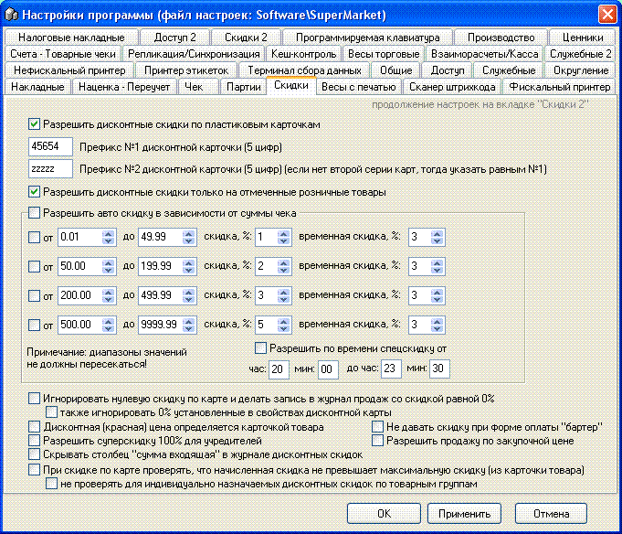

- 
Разрешить дисконтные скидки по пластиковым карточкам - главная опция, включает дисконтную систему.
- Префикс №1 дисконтной карточки (5цифр) -
повторяющаяся первая половина штрихкода карты, отличает карту от аналогичных
карт других магазинов.
- Префикс №2 дисконтной карточки (5цифр) - если нет
второй серии карт, тогда указать равным №1 - редко используется, иногда
позволяет решить проблему с неправильно эмитированными картами с ошибкой в
штрихкоде.
- Разрешить дисконтные скидки только на отмеченные
розничные товары - если установлена эта опция и в карточке товара указано
"нет" для суммовой скидки, то на такой товар любые скидки не
распространяются.
- Группа опций Разрешить авто скидку в зависимости
от суммы чека - Вы можете сделать программу лояльности, не проводя эмиссии
дисконтных карточек или совместить эти две системы. Данные опции позволяют это
сделать. Вы можете задать до четырех диапазонов скидок в зависимости от суммы
чека, кроме этого, есть временнАя скидка, разрешаемая или нет в зависимости от
соответствующей опции товарной группы (см. раздел "Справочник товарных групп")
и опции "Разрешить по времени спецскидку от...". В программе предусмотрены все
варианты наложения скидок и дважды скидка не будет сделана! Приоритет имеет
дисконтная карточка.
- Игнорировать нулевую скидку по карте и делать
запись в журнал продаж со скидкой равной 0%, а также игнорировать 0%
установленные в свойствах дисконтной карты - иногда используется для ведения
статистики, даже если скидка не начислена, можно впоследствии увидеть, что
карта использовалась.
- Дисконтная (красная) цена определяется карточкой
товара - установка отключает использование накопительной и индивидуально
назначаемой по товарным группам скидки и цена товара берется из оптового
тарификатора в карточке товара. Не устанавливайте данную опцию, если не
знаете, что это такое.
- Не давать скидку при форме оплаты "бартер" - если
чек закрывают по такой форме оплаты, то скидка не предоставляется при
установке данной опции.
- Разрешить суперскидку 100% для учредителей - дает
возможность выставить такую скидку в некоторых дисконтных картах, чтобы
учредители магазина могли брать товары бесплатно.
- Разрешить продажу по закупочной цене - позволяет
выставить в свойствах дисконтной карты признак "по закупке" и для таких карт
скидка будет равна наценке на каждом товаре в суммовом выражении.
- Скрывать столбец "сумма входящая" в журнале
дисконтных скидок - значение опции ясно из названия.
- При скидке по карте проверять, что начисленная
скидка не превышает максимальную скидку (из карточки товара) - в карточке
товара есть расчетное ограничение скидки, чтобы не продать "в минус"
товар.
- Не проверять для индивидуально
назначаемых скидок по товарным группам - добавляет исключение из предыдущей
опции для такой системы скидок.

Разрешить индивидуально назначаемые дисконтные скидки по товарным группам - опция включающая возможность на каждую дисконтную карточку относить индивидуальные скидки в зависимости от товарной группы, на товар которой делается дисконт. Подробнее см. "Справочник дисконтных карт". Две группы переключателей регулируют что делать если группа в карточке прописана, но скидка равна нулю или если она вообще не указана в дисконтной карточке.
Накопительная система скидок - 9 градаций скидок в зависимости от выбранного оборота по каждой карте.
Период суммирования накоплений на карточке, дней - за какой период будет браться вышеуказанный оборот для назначения правильного размера скидки.
При изменении номера карты переносить владельцу его старые накопления - в случае утери карты вадельцу выдают новую и при сохранении изменений программа автоматически переприсвоит старые записи в дисконтном журнале на новый номер карты, чтобы накопительная скидка правильно рассчитывалась.
Игнорировать накопительную скидку и давать скидку по карте - позволяет использовать опцию в свойствах дисконтной карты "приоритетнее накопительной системы", чтобы некоторые карты имели фиксированную скидку, даже если все остальным включена накопительная. Обычно используется для VIP-карт.
Разрешить использование вечерней скидки - позволяет использовать одновременно накопительную скидку и скидку по времени с вкладки "Скидки". Редкое сочетание, устанавливайте только после предварительной проверки, что вас устраивает результат.